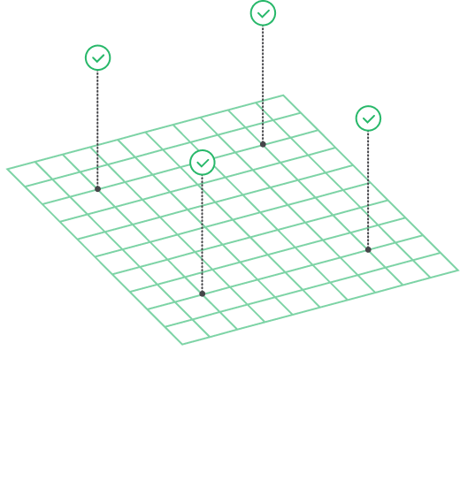

Consensus Protocol
EduChain GCIT utilizes the Proof of Work (PoW) consensus mechanism to secure and validate transactions on its blockchain. PoW requires miners to solve complex mathematical puzzles in order to add new blocks to the chain. This ensures that only legitimate transactions are recorded, maintaining the integrity and security of the network.

Although PoW provides robust security, it is also energy-intensive, requiring significant computational power. This trade-off is an important consideration in the design of EduChain GCIT, as it balances security with resource usage.